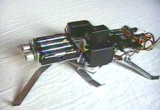
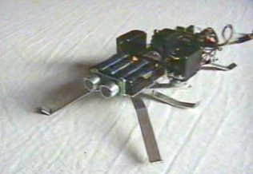

Movies
Following videos of the hexapod robot are available for downloading:

walk.mpg (569kB, 6s). Shows Pivot (revision 2) walking from
the side. As can be seen here, the legs still show some sliding
due to the slippery underground. This can be minimized by using
rubber feet, and fine tune the alignment of the legs.

walkturn.mpg (1485kB, 16s). Shows Pivot (revision 2)
walking towards the camera, make a 180 degree turn, and walk
back. Right legs need to be raised a bit higher when compared
to the left legs on the video.